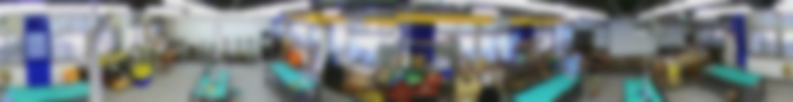

3DGS → CAD 自動重繪：工坊 scan2cad
把教室/工坊的 3DGS 高斯潑濺掃描，自動分析出物件與空間尺寸，再用 三套建模軟體（OpenSCAD／Blender／CadQuery）自動重繪成參數化、可製造、通過裝配驗證的模型。串起 x5-roomtour（空間掃描）與 MCL39（建模驗證）兩套系統。
8.8×10.5
室內淨 (m)
92
面積 m²
21
重繪物件
L1·L3 ✓
通過驗證
41%
點雲覆蓋

0整體流程
1輸入：真實工坊 3DGS
來源＝去霧工坊 3DGS（lt4_defog，解碼後 106 萬顆高斯）。用天花板 T8 日光燈管（4ft=1.22m）標定公制 k=0.859 m/單位。

2①+② 已知物件 & 幾何發掘
先讀既有 arch_elements.json（牆/門/窗/黑板/12 燈/8 家具，皆公制），回點雲量每件高度；再掃「地板以上」點做占據分群（侵蝕分裂避免黏成巨塊），自動新增 6 件。

3③ VLM 物件分析與測量
頂視分群結構上抓不到牆面/天花板的東西。把環景照交給 VLM 辨識、以工作檯高 0.85m 為尺度錨測量，補上這些類別（投影布幕、公告欄、牆掛冷氣×2、通風管、鑽床列…），並替發掘方塊命名，共增 7 件。
VLM 辨識類別：工作檯(綠檯面,環繞+中島)、木凳(多張)、鑽床/砂輪機(檯上機台)、空壓機(黃,地面)、透明機台外殼(疑雷切/展示)、投影布幕(牆掛)、投影機/掃描架(三腳)、藍色公告欄(牆掛)、木製抽屜櫃、層架+彩色收納箱、牆掛分離式冷氣x2、螺旋通風管(天花)、黑板(前牆)、螢幕/電腦

4④ 自動生成 CAD（三套建模軟體）
整合後的場景（21 件）自動吐成三種模型：OpenSCAD（宣告式 CSG，家具用參數化模組：檯面+桌腳、抽屜、座面、氣瓶…）、Blender（bpy 網格）、CadQuery（B-Rep→STEP，可製造）。三引擎一致＝跨系統驗證。

scene.json 自動生成。左 OpenSCAD（CSG 細緻家具）、中 Blender（網格）、右 CadQuery（B-Rep 線框，匯出 STEP）。對應 MCL39 的三軟體交叉驗證。


檢索升級：粗方塊 → 精密參數化件
點雲分群只給得出「有尺寸的方塊」。要更精細，正解是檢索——用一個精密參數化零件取代方塊，擺到偵測到的位置。這裡示範把偵測到的鑽床換成一支完整的立式鑽床件（底座 T 槽、立柱、可調圓工作台＋夾把、頭部鑄件、馬達、皮帶罩、主軸套筒＋夾頭、三幅進給手輪、開關盒）。

可製造 B-Rep：這支鑽床件也用 CadQuery 建成 B-Rep，
isValid()=True、體積 0.022 m³，匯出 out/drillpress.step（301 KB）——直接送製造/模擬。這正是「檢索自 MCL39 已驗證零件庫」的作法：把設計端（MCL39）建好驗過的精密件，擺進真實掃描空間（x5-roomtour）。5⑤ MCL39 式驗證 L1 / L3 L1 ✓ · L3 ✓ (0 穿插, 0 出界)
把重繪場景接上 MCL39 驗證金字塔：
- L1 健康：CadQuery 匯出的 STEP，房殼 + 16 件家具 B-Rep 全部
isValid()✓（水密、無壞面）。 - L3 裝配：家具足跡兩兩穿插檢查 + 是否皆在房內。初次抓到 2 處穿插 + 1 件戳出後牆，經自動修正（內縮 3 件、縮小 櫃、移除 層架）後 0 穿插 0 出界 ✓。

6疊回點雲驗證
CAD 物件框疊回點雲俯視占據。佔據覆蓋率 41%——掃到的站立物有 41% 落在已建模框內，其餘是牆邊材料、檯上工具等零碎雜項（box 模型合理極限）。

7重繪物件清單（21 件）
| 物件 | 寬×深×高 (m) | 來源 | 高度來源 |
|---|---|---|---|
| 工作檯(連排) | 7.58×1.91×1.37 | 已知 | cloud |
| 工作檯(連排) | 7.13×2.39×1.13 | 已知 | cloud |
| 工作檯(連排) | 5.82×0.95×0.79 | 已知 | cloud |
| 工作桌 | 2.12×1.02×0.97 | 已知 | cloud |
| 櫃 | 1.11×1.00×0.86 | 已知 | cloud |
| 櫃 | 0.65×0.22×1.19 | 已知 | cloud |
| 櫃 | 1.24×0.81×1.02 | 已知 | cloud |
| 邊檯/櫃 | 2.15×0.57×1.60 | 已知 | cloud |
| 器材(推定) | 0.66×0.42×1.15 | 發掘+VLM | — |
| 空壓機 | 0.54×0.39×1.34 | 發掘+VLM | — |
| 木凳 | 0.63×0.33×0.81 | 發掘+VLM | — |
| 木凳 | 0.36×0.30×1.50 | 發掘+VLM | — |
| 器材(推定) | 0.39×0.27×1.21 | 發掘+VLM | — |
| 木凳 | 0.30×0.27×1.45 | 發掘+VLM | — |
| 鑽床 | 0.50×0.50×1.55 | VLM新增 | vlm標準尺寸 |
| 鑽床 | 0.50×0.50×1.55 | VLM新增 | vlm標準尺寸 |
| 投影布幕 | 2.00×0.04×1.70 | VLM牆掛 | 環景推定 |
| 藍色公告欄 | 1.70×0.05×1.40 | VLM牆掛 | 環景推定 |
| 牆掛冷氣 | 0.90×0.22×0.30 | VLM牆掛 | 環景推定 |
| 牆掛冷氣 | 0.90×0.22×0.30 | VLM牆掛 | 環景推定 |
| 螺旋通風管 | r0.13×垂0.90 | VLM天花 | 環景推定 |
8誠實的能與不能
可靠：房間外殼＋家具/機台的細緻參數化模型（桌腳、抽屜、機台結構），三引擎一致、通過 L1/L3。適合布局規劃、數位孿生、擺新設備前的干涉檢查。尺寸來自管長標定＋點雲量測。
限制：① 淨高 2.0m 是「掃到的高度」，相機視角可能未含真天花板（±10%）。② 覆蓋率 41%——工坊零碎雜物多，box 模型只抓大件。③ 特定機台的精密曲面/機構，模組是「像似」而非精確複製——精確版需檢索：擺入 MCL39 已建並驗證的參數化零件。④ 牆掛/天花板物件位置為環景方位推定（±0.5m）。
9如何重跑
bash run_pipeline.sh — 解碼→分析→發掘→VLM→三引擎生成→L1/L3 驗證+自動修正→疊圖，一鍵到底。產物：
out/room.scad（OpenSCAD 可改參）、out/build_blender.py（Blender）、out/room.step（可製造 B-Rep）、work/scene_v4.json（驗證後場景）。scan2cad · 3DGS→CAD 自動重繪 · 串接 x5-roomtour(空間掃描) + MCL39(建模驗證)
工坊 lt4_defog · k=0.859 m/單位 · L1·L3 通過 · 三引擎(OpenSCAD/Blender/CadQuery) · 生成 2026-07-08
工坊 lt4_defog · k=0.859 m/單位 · L1·L3 通過 · 三引擎(OpenSCAD/Blender/CadQuery) · 生成 2026-07-08